전기기능사 (2003-07-20 기출문제)
1과목: 전기 이론
1. 10[㎝] 떨어진 2장의 금속 평행판 사이의 전위차가 500[V]일때 이 평행판 안에서 전위의 기울기는?
- 5[V/m]
- 50[V/m]
- 500[V/m]
- 5000[V/m]
(정답률: 53%)

2. 자체 인덕턴스가 L1, L2 , 상호 인덕턴스가 M 인 코일이 자기적으로 결합을 했을 때 합성 인덕턴스는?
- L1+ L2+ M
- L1- L2+ M
- L1+ L2± 2M
- L1- L2± 2M
(정답률: 82%)
3. 100[V], 500[W] 전열기를 80[V]로 사용하면 소비전력[W]은?
- 500
- 450
- 400
- 320
(정답률: 47%)
4. 자기 저항이 2300[AT/Wb]인 회로에 40000[AT]의 기자력을 가할때 생기는 자속은 얼마인가?
- 17.2
- 17.4
- 17.6
- 17.8
(정답률: 75%)
5. 도체에 5[A]의 전류가 1분간 흘렀다. 이때 도체를 통과한 전기량은 얼마인가?
- 250[C]
- 300[C]
- 350[C]
- 400[C]
(정답률: 88%)
6. 도선의 반지름이 2 배로 늘어나면 그 저항은 어떻게 되는가?
- 4배로 는다.
- 2배로 는다.
- 1/4로 준다.
- 1/2로 준다.
(정답률: 46%)
7. 그림과 같은 회로의 a,b 단자에서 본 합성 저항은? (단, 숫자의 단위는 Ω이다.)
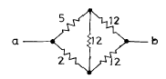
- 11.6
- 7.6
- 7.0
- 4.6
(정답률: 49%)
8. 그림에서 B점의 전위가 100[V], D점의 전위가 60[V]이면 AB사이 3[Ω]에 흐르는 전류[A]는?(오류 신고가 접수된 문제입니다. 반드시 정답과 해설을 확인하시기 바랍니다.)
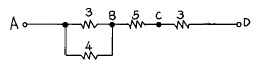
- 12/7
- 17/7
- 24/7
- 32/7
(정답률: 26%)
9. 그림에서 평형조건이 맞는 식은?
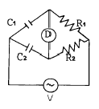
- C1 R1 = C2 R2
- C1 R2 = C2 R1
- C1 C2 = R1 R2
- 1/C1 C2 = R1 R2
(정답률: 50%)
10. 어드미턴스의 실수부는 무엇을 나타내는가?
- 임피던스
- 리액턴스
- 콘덕턴스
- 서셉턴스
(정답률: 44%)
11. 저항 R과 유도리액터스 XL이 직렬로 연결되었을 때 임피던스[Ω]는?
- R+XL
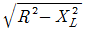
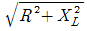
- R2+XL2
(정답률: 82%)
12. L[H], C[F]를 병렬로 결선하고 전압[V]를 가할때 전류가 0 이 되려면 주파수 f는 몇[㎐]인가?
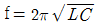
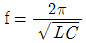
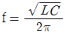
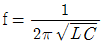
(정답률: 74%)
13. 쿨롱의 법칙에서 2개의 점전하 사이에 작용하는 정전력의 크기는?
- 두전자량의 곱에 비례하고 전자량 사이의 거리제곱에 반비례한다.
- 두전기량의 곱에 비례하고 전기량 사이의 거리제곱에 비례한다.
- 두전하의 곱에 비례하고 전하 사이의 거리의 제곱에 비례한다.
- 두전기량의 곱에 비례하고 전기량 사이의 거리의 제곱에 반비례한다.
(정답률: 67%)
14. 반도체로 만든 PN접합은 무슨 작용을 하는가?
- 증폭작용
- 방진작용
- 정류작용
- 진폭작용
(정답률: 83%)
15. Ｉ=4+j3 로 표시되는 전류의 크기는 몇 [A]인가?
- 3[A]
- 4[A]
- 5[A]
- 7[A]
(정답률: 75%)
16. 그림과 같은 회로에서 합성 임피던스[Ω] 값은?
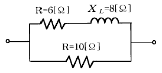
- 1
- 2
- 3
- 5
(정답률: 52%)
17. 전류의 열작용과 관계가 있는 법칙은 어느 것인가?
- 옴의 법칙
- 키르히호프의 법칙
- 줄의 법칙
- 플레밍의 오른손 법칙
(정답률: 87%)
18. 전해액에 전류가 흘러 화학 변화를 일으키는 현상을 무엇이라 하나?
- 전리
- 전기분해
- 화학분해
- 전기변화
(정답률: 66%)
19. 4심 캡타이어 케이블 심선의 색별은?
- 흑, 백, 적, 청
- 흑, 백, 청, 록
- 흑, 백, 적, 녹
- 흑, 백, 황, 록
(정답률: 64%)
20. 연피가 없는 케이블은 습기가 많고, 접속 박스가 없는 경우 케이블의 상호 접속은 어떻게 하는가?
- 클리트를 써서 접속한다.
- 납땜 접속한다.
- 애자를 써서 접속한다.
- 접속함에서 접속한다.
(정답률: 47%)
2과목: 전기 기기
21. 금속관에 전선을 넣어 공사를 할 경우 전선 총 단면적은 금속관 안의 단면적의 최대 몇[%]가 되도록 선정하는가?(오류 신고가 접수된 문제입니다. 반드시 정답과 해설을 확인하시기 바랍니다.)
- 20[%]
- 38[%]
- 48[%]
- 60[%]
(정답률: 44%)
22. 19/2.0 [㎜] 인 연선의 바깥 지름은 몇 [㎜] 인가?
- 13.0
- 11.5
- 10.0
- 9.0
(정답률: 39%)
23. 일반적으로 큐비클형(Cubicle type)이라 하며, 점유 면적이 좁고 운전, 보수에 안전하므로 공장, 빌딩 등의 전기실에 많이 사용되며 조립형, 장갑형이 있는 배전반은?
- 폐쇄식 배전반
- 데드 프런트식 배전반
- 철제 수직형 배전반
- 라이브 프렌트식 배전반
(정답률: 59%)
24. 전로에서 기계, 기구등의 외함 접지공사중 고압의 경우 접지공사는?
- 특별제3종
- 제3종
- 제2종
- 제1종
(정답률: 29%)
25. 전기이발기, 전기면도기, 헤어드라이어 등에 사용되는 코드는?
- 캡타이어 코드
- 전열기용 코드
- 금실 코드
- 극장용 코드
(정답률: 37%)
26. 400[V] 미만의 애자사용 공사에 있어서 전선상호간의 최소 거리는?
- 2.5[cm]
- 4[cm]
- 6[cm]
- 10[cm]
(정답률: 51%)
27. 특별고압이란?
- 7[kV] 넘는것
- 5[kV] 넘는것
- 14[kV] 이상
- 20[kV] 이상
(정답률: 80%)
28. 코드펜던트로서 매달 수 있는 코드에 걸리는 중량의 총계가 최대 몇[kg] 이하라야 하는가?
- 1
- 3
- 4
- 5
(정답률: 52%)
29. 경질비닐관의 규격(굵기)이 아닌 것은?
- 14[mm]
- 16[mm]
- 18[mm]
- 22[mm]
(정답률: 53%)
30. 백열전등을 사용하는 전광사인에 전기를 공급하는 전로의 사용전압은 대지전압을 몇 V 이하로 하는가?
- 200 V 이하
- 300 V 이하
- 400 V 이하
- 600 V 이하
(정답률: 59%)
31. 22[mm] 후강전선관에 넣을 수 있는 전선의 내부 단면적은 약 몇 [㎜2]인가? (단, 내단면적의 32%로 한다.)
- 81
- 120
- 239
- 400
(정답률: 42%)
32. 하나의 수용장소의 인입선 접속점에서 분기하여 지지물을 거치지 아니하고 다른 수용장소의 인입선 접속점에 이르는 전선은?
- 가공 인입선
- 구내 인입선
- 연접 인입선
- 옥측배선
(정답률: 70%)
33. 단선의 분기 접속에서 3.2[mm]이상의 굵은 단선의 접속은 어느 접속 방법으로 하는 것이 좋은가?
- 트위스트 접속
- 우산형 접속
- 브리타니어 접속
- 슬리브 접속
(정답률: 68%)
34. 대지 전압이 150[V]를 넘고 300[V]이하인 경우의 저압 전로의 절연 저항값[㏁]은?
- 0.1
- 0.2
- 0.3
- 0.4
(정답률: 64%)
35. 계전기별 고유번호에서 37A 명칭은?
- 교류 부족전류계전기
- 직류 부족전류계전기
- Fuse 용단계전기
- 부족전류 계전기
(정답률: 36%)
36. 저압 전선이 조영재를 관통하는 경우 사용하는 애관 등의 양단은 조영재에서 몇[㎝]이상 돌출되어야 하는가?
- 1.5
- 3.0
- 4.5
- 6.0
(정답률: 37%)
37. 다음 중 제3종 접지 공사를 하는 주된 목적은?
- 기기의 효율을 좋게 한다.
- 기기의 절연을 좋게 한다.
- 기기의 역률을 좋게 한다.
- 누전에 의한 화재방지,감전방지등을 한다.
(정답률: 64%)
38. 지지물에 완금, 완목, 애자 등을 장치하는 것은?
- 건주
- 가선
- 장주
- 경간
(정답률: 61%)
39. 전등전력용의 접지극 또는 접지선은 피뢰침용의 접지극 또는 접지선에서 몇[m]이상 격리하여야 하는가?
- 0.5
- 1.0
- 1.5
- 2
(정답률: 42%)
40. 먼지가 많은 장소에 사용되는 전구 소켓으로 적합한 것은?
- 키이소켓
- 분기소켓
- 키이리스소켓
- 모걸소켓
(정답률: 48%)
3과목: 전기 설비
41. 다음의 보기 중 명칭과 약칭이 맞게 짝지어지지 않은 것은?
- 600V고무 절연 전선 - RN전선
- 인입용 비닐 절연 전선 - DV전선
- 옥외용 비닐 절연 전선 - OW전선
- 비닐 절연 외장 케이블 - VV케이블
(정답률: 53%)
42. 연선의 직선 접속법이 아닌 것은?
- 권선 접속
- 단권 접속
- 복권 접속
- 트위스트 접속
(정답률: 60%)
43. 공칭전압 3300(3300/5700)에서 괄호안의 의미는?
- 1차전압/2차전압
- 2차전압/1차전압
- 상전압/선간전압
- 선간전압/상전압
(정답률: 41%)
44. 지름이 35∼50㎜의 여러 개의 강철관을 적당히 구부려 양쪽을 레더에 붙인 것으로 보일러의 연도 또는 노벽에 붙이는 것은?
- 절탄기
- 재열기
- 과열기
- 복수기
(정답률: 31%)
45. 송전선에서 연가를 하는 주된 목적은?
- 도시 미관을 좋게 하기 위하여
- 선로정수를 평형되게 하기 위하여
- 유도뢰를 방지하기 위하여
- 전력수송을 늘릴 수 있기 때문에
(정답률: 56%)
46. 전선 3개가 수평방향으로 4m간격으로 배치되어 있는 경우 기하학적 평균거리는 몇 m 인가?
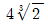
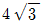
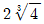
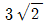
(정답률: 46%)
47. 전선이 구비해야 될 조건으로 틀린 것은?
- 도전률이 클 것
- 기계적인 강도가 강할 것
- 비중이 클 것
- 내구성이 있을 것
(정답률: 66%)
48. 보일러의 증발계수를 나타내는 식은? (단, i[kcal/kg]은 과열증기의 엔탈피, io[kcal/kg]은 절탄기 입구에서 급수의 엔탈피이다.)
- i-io/539.3
- io-i/539.3
- i/539.3
- io/539.3
(정답률: 38%)
49. 평균 발열량 5000kcal/kg인 석탄 2t을 사용하여 5000kWh를 발전하고 있는 화력발전소의 종합효율은 몇 % 인가?
- 23
- 28
- 36
- 43
(정답률: 29%)
50. 정지형의 조상설비로 가장 많이 사용되고 있는 것은?
- 전력용콘덴서
- 동기조상기
- 비동기조상기
- 리액터
(정답률: 32%)
51. 증기터빈은 조속기가 필요하다. 이 조속기의 속도변동률 조정 범위는 보통 몇 % 정도인가?
- 2∼4
- 5∼7
- 8∼10
- 11∼13
(정답률: 25%)
52. 단상2선식 전선로에서 Va=110V, Vb=1⑤V, Ｉ=100A로 할때 전원의 분담전류는 약 몇 A 인가? (단, r1=0.2Ω/선, r2=0.1Ω/선이다.)
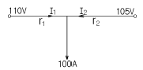
- Ｉ1=42, Ｉ2=58
- Ｉ1=58, Ｉ2=42
- Ｉ1=50, Ｉ2=50
- Ｉ1=100, Ｉ2=0
(정답률: 39%)
53. 기력발전소의 미분탄연소장치에서 미분탄을 버너에 분사 시킬 경우 가장 적합한 분사속도는 몇 m/s 인가?
- 10∼20
- 20∼30
- 30∼40
- 40∼50
(정답률: 39%)
54. 송전선로의 수전단을 단락한 경우 송전단에서 본 임피던스는 300Ω이고, 수전단을 개방한 경우에는 1200Ω일 때 이 선로의 특성임피던스는 몇 Ω 인가?
- 600
- 750
- 1000
- 1200
(정답률: 40%)
55. 변전소 구내에서 보폭 전압을 저감하기 위한 방법으로 잘못된 것은?
- 접지선을 얕게 매설한다.
- mesh식 접지방법을 채용하고 mesh간격을 좁게 한다.
- 자갈 또는 콘크리트를 타설한다.
- 철구, 가대 등의 보조 접지를 한다.
(정답률: 50%)
56. 1상당의 용량 100kVA의 콘덴서에 제5고조파를 억제시키기 위해 필요한 직렬리액터의 기본파에 대한 용량은 최소 몇 kVA 정도로 하는가?
- 2
- 4
- 50
- 100
(정답률: 29%)
57. 송전선로에서 송전단이나 수전단 처럼 한쪽 방향으로 선로가 연결되는 철탑으로 철탑의 기호를 D로 표시하는 것은?
- 직선형
- 각도형
- 인류형
- 내장형
(정답률: 39%)
58. 해양에서 발생하는 간만의 차에 의한 해수의 위치 에너지를 이용하는 발전방식으로, 만조시 수문을 열어 바닷물을 가두어 두었다가 간조시 그 차를 이용하여 수차 발전기를 운전하는 발전방식은?
- 일반 수력발전
- 소수력발전
- 조력발전
- 양수발전
(정답률: 60%)
59. 복수기에 대한 설명으로 옳은 것은?
- 터빈에서 배기되는 증기를 복수기내로 도입하여 냉각 시키므로 열낙차를 증가시킨다.
- 복수기내의 진공도가 높을수록 터빈의 열효율은 저하된다.
- 복수기를 순환한 냉각수는 절탄기로 보내어 보일러로 급수된다.
- 터빈으로 들어가기전의 증기를 복수기로 재가열하여 과열증기로 만든다.
(정답률: 33%)
60. 수압관로의 평균 유속을 v[m/s], 관의 지름을 D[m], 사용유량을 Q[m3/s]로 하면 Q를 구하는 식은?
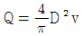
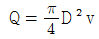
- Q=4πDv
- Q=4πD2v
(정답률: 39%)
전기장은 평행판 사이의 전하에 의해 발생합니다. 두 평행판 사이의 거리가 10[㎝]이므로, 전기장은 500[V]를 10[㎝]로 나눈 값인 5000[V/m]이 됩니다.
따라서 정답은 "5000[V/m]"입니다.